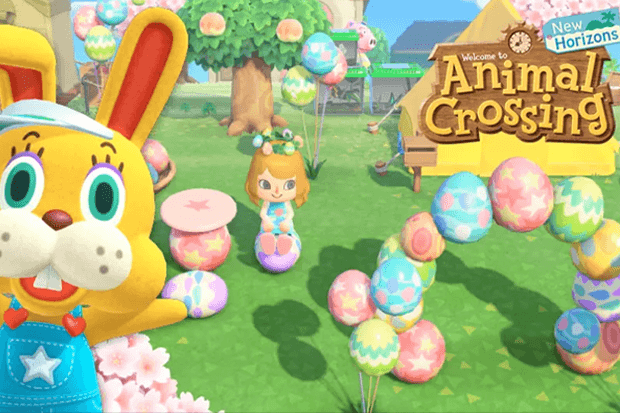
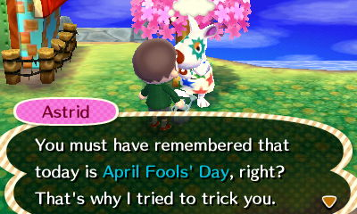
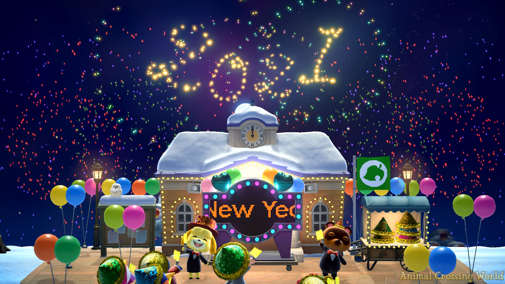

Animal Crossing presents players with a series of special events throughout the year, providing them with unique and festive experiences that go beyond regular gameplay. These events aren’t mandatory but allow players to engage in new activities and interact with special characters who lead the celebrations. Popular events include New Year’s Countdown, April Fool’s Day, Bunny Day, Toy Day (Christmas), Halloween and more. Players can collect exclusive, time-limited items such as furniture to decorate their home, gifts or candy that add to the holiday atmosphere, making the game feel even more magical.
Bunny Day in Animal Crossing
April Fool’s in Animal Crossing
New Years in Animal Crossing
One of the most memorable events is the player's birthday. On this day, villagers throw a surprise party, and the player's mom sends a heartfelt gift through the mail. It’s a moment that makes the player feel special and celebrated, all within the cozy, welcoming world of Animal Crossing. These events, along with the seasonal festivals, make the game feel personal and bring a sense of joy and celebration to every occasion.